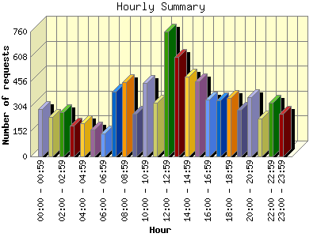
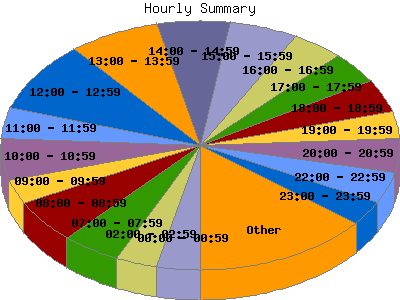

Report generated by Analog 6.0 and Report Magic 2.21
|
Web Server Statistics for "Harish Narayanan (hnarayan) - June 2005" Report generated by Analog 6.0 and Report Magic 2.21 |
The Hourly Summary identifies the level of activity broken down by each hour. Remember that one page hit can result in several server requests as the images for each page are loaded. This summary also compares the level of activity during working hours and after hours as a total for the report time frame.


| Hour | Number of requests | Number of bytes transferred | Percentage of the bytes | Percentage of the requests | |
|---|---|---|---|---|---|
| 1. | 00:00 - 00:59 | 287 | 11.383 MB | 2.43% | 3.50% |
| 2. | 01:00 - 01:59 | 239 | 9.366 MB | 2.00% | 2.92% |
| 3. | 02:00 - 02:59 | 271 | 4.995 MB | 1.07% | 3.31% |
| 4. | 03:00 - 03:59 | 189 | 3.967 MB | 0.85% | 2.31% |
| 5. | 04:00 - 04:59 | 203 | 4.676 MB | 1.00% | 2.48% |
| 6. | 05:00 - 05:59 | 162 | 14.660 MB | 3.13% | 1.98% |
| 7. | 06:00 - 06:59 | 141 | 4.785 MB | 1.02% | 1.72% |
| 8. | 07:00 - 07:59 | 395 | 16.479 MB | 3.52% | 4.82% |
| 9. | 08:00 - 08:59 | 454 | 9.480 MB | 2.02% | 5.54% |
| 10. | 09:00 - 09:59 | 262 | 10.002 MB | 2.14% | 3.20% |
| 11. | 10:00 - 10:59 | 448 | 11.974 MB | 2.56% | 5.47% |
| 12. | 11:00 - 11:59 | 329 | 6.933 MB | 1.48% | 4.02% |
| 13. | 12:00 - 12:59 | 758 | 25.812 MB | 5.51% | 9.26% |
| 14. | 13:00 - 13:59 | 604 | 90.378 MB | 19.31% | 7.38% |
| 15. | 14:00 - 14:59 | 485 | 15.787 MB | 3.37% | 5.92% |
| 16. | 15:00 - 15:59 | 455 | 11.599 MB | 2.48% | 5.56% |
| 17. | 16:00 - 16:59 | 346 | 19.288 MB | 4.12% | 4.23% |
| 18. | 17:00 - 17:59 | 341 | 21.725 MB | 4.64% | 4.17% |
| 19. | 18:00 - 18:59 | 356 | 14.760 MB | 3.15% | 4.35% |
| 20. | 19:00 - 19:59 | 284 | 19.340 MB | 4.13% | 3.47% |
| 21. | 20:00 - 20:59 | 359 | 13.893 MB | 2.97% | 4.38% |
| 22. | 21:00 - 21:59 | 233 | 33.521 MB | 7.16% | 2.85% |
| 23. | 22:00 - 22:59 | 329 | 19.144 MB | 4.09% | 4.02% |
| 24. | 23:00 - 23:59 | 258 | 74.166 MB | 15.84% | 3.15% |
| Work Hours (8:00am-4:59pm) | 4,141 | 201.252 MB | 42.99% | 50.57% | |
| After Hours (5:00pm-7:59am) | 4,047 | 266.860 MB | 57.01% | 49.43% | |
This report was generated on July 22, 2005 14:26.
Report time frame June 1, 2005 00:06 to June 30, 2005 23:57.
| Web statistics report produced by: | |
 Analog 6.0 Analog 6.0 |  Report Magic 2.21 Report Magic 2.21 |